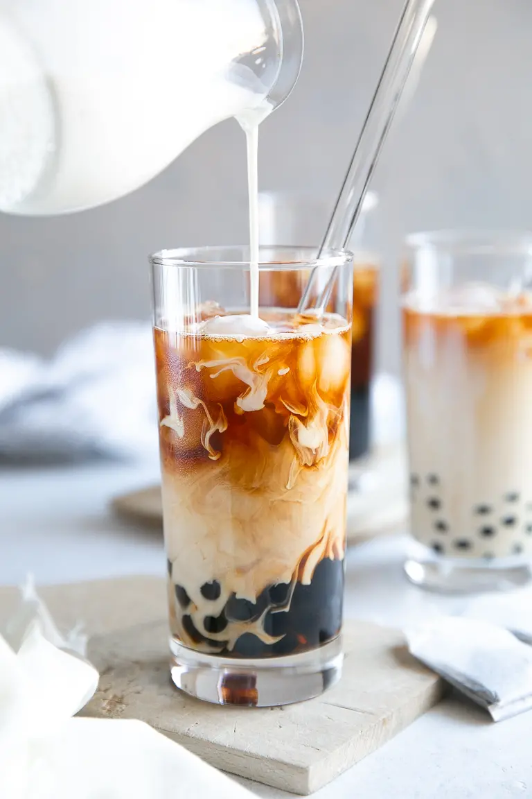

Bubble tea

Bubble tea is a sweet iced beverage that has been popularized through social media posts
It is a Taiwanese drink created in the 1980s and goes by many names such as: milk tea, pearl tea
tapioca tea, boba tea
and several others
Ingredients
- Black tea
- Milk
- Sweetener (this recipe will use sugar, but honey would also work)
- Ice
- Tapioca pearls (fast cooking type)
Steps
- Bring 6 cups of water to boiling point and remove them from the heat
- Stir in sugar and add tea bags, allow tea to steep for at least 15 minutes
- 15 minutes before serving your bubble tea boil a small pot of water,
add the boba and stir to prevent them from sticking together, let it cook for approximately
5-8 minutes(they should float to the surface)
- drain the pot and rinse the boba under cold water
- grab 4 glasses and divide the cooked pearls between them
- fill each glass with ice and pour approximately 300ml of room temperature black tea in the glasses
- add milk at your discretion
- add sweetener if needed